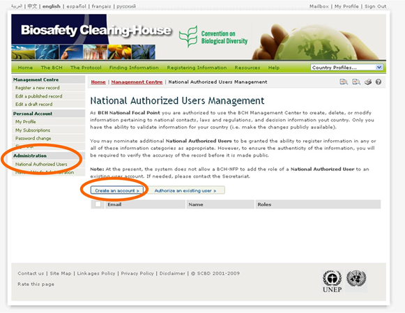
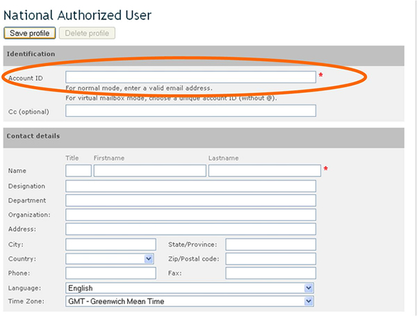
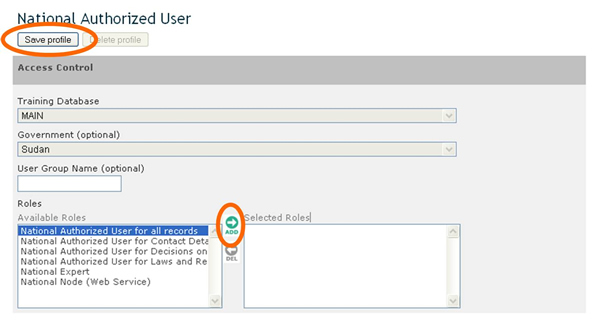

In some instances, BCH-NFPs may wish to delegate to National Authorized Users (NAUs) some or all of their responsibilities of registering information in the BCH.
NAUs can create and manage draft records in all of the BCH’s categories of information (with the exception of registering National Focal Points). However, all new records created by NAUs, as well as any modifications made to existing records, are subject to validation prior to publication in the BCH either by the BCH-NFP, in the case of National records, or by the Secretariat in the case of Reference records.
The link National Authorized Users in the Administration section provides access to a page to manage and create NAUs.
The process for creating a new NAU is as follows:
-
Log onto the Management Centre (at http://bch.cbd.int/managementcentre/);
-
Click on National Authorized Users in the left-hand menu under the Administration heading;
-
Click on the Create an account button;
-
In the Identification section of the User Profile page that appears, enter a valid email address in the Account ID field;
-
In the Contact details section, enter the person’s name.
-
In the Access Control section, select the role of National Authorized User for all records from the Roles field;
-
Click on the icon which makes the role appear in the Selected Roles field; and
-
Click on the Save profile button at the top of the User Profile page.

Figure 40
The identification of the account of a new NAU must be a valid email address. Communication will be established with the user through that email address.
At present, the system does not allow a BCH-NFP to add the role of a National Authorized User to an existing user account. If this is required, please contact the Secretariat.

Figure 41

Figure 42
Under the section Access Control, select a role for the NAU from the Available Roles field and click on the Add arrow icon to assign the role to the user (thus adding the role to the Selected Roles field). To remove a role, perform the reverse operation: select a role from the Selected Roles field and click on the Del arrow icon. Once you have finished, click on the button Save profile at the top of the page.